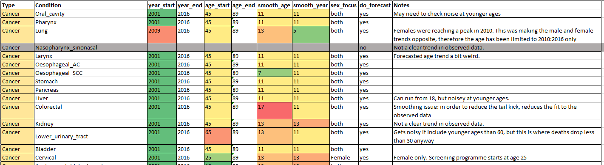

mortality_forecasting.RmdSTAPM operates on the basis of projecting the past trends in the age-patterns of cause-specific mortality forwards into the future for each sex and Index of Multiple deprivation population subgroup. It is important to also consider how mortality might change into the future due to factors that are not related to smoking. For example, the effect of a future policy on cardiovascular disease mortality might be over-estimated if the ongoing declines in cardiovascular mortality rates are not modelled (Castillo et al. 2014). For STPM, this presents the challenge of producing forecasts of the age-patterns of cause-specific mortality for each sex and Index of Multiple Deprivation population subgroup. Intervention effects would then be modelled as adjustments to these trends.
The advantages of conducting a cause-specific forecast is that it enables us to incorporate different trends for different diseases and different subgroups e.g. that that there are fewer deaths from Ischeamic Heart disease but more from dementia, and that lung cancer rates are declining in males but rising in females. Cause-specific forecasts stratified by IMD quintiles also allow us to incorporate the different socioeconomic trends in past mortality and to project an expectation of the future socioeconomic trends in mortality.
There are several methods that might be used (Li et al. 2019; Arnold and Sherris 2013; Bergeron-Boucher et al. 2017). An issue with cause-specific mortality forecasting is that the forecasts of cause-specific mortality rates generally do not add up to the forecasts of the aggregate all-cause mortality rates. Wilmoth (1995) observed that mortality projections are more pessimistic when disaggregated by cause of death because the causes of death that are decreasing the most slowly or that are increasing come to dominate (i.e. the aggegate trends are most influenced by trends in the causes with the most deaths).
Our current approach in STAPM is to conduct a Lee-Carter forecast (Lee and Carter 1992) separately for mortality from different causes within 10 subgroups defined by combinations of sex and IMD quintile. The Lee-carter method is a “proportional rate of change model.” It summarises the age-period surface of log-mortality rates (\(\log{}m_{xt}\)) in terms of vectors \(\mathbf{a}\) and \(\mathbf{b}\) along the age dimension and \(\mathbf{k}\) along the time dimension such that
\[\begin{equation} \log{}m_{xt}=a_x+b_xk_t+e_{xt} \label{leecartereq} \end{equation}\]
with restrictions such that the \(b\)’s are normalized to sum to one and the \(k\)’s sum to zero, so the \(a\)’s are average log rates.
The vector \(\mathbf{a}\) can be interpreted as an average age profile of mortality, the vector \(\mathbf{k}\) tracks mortality changes over time, and the vector \(\mathbf{b}\) determines how much each age group changes when \(k_t\) changes. When \(k_t\) is linear on time each age group changes at its own exponential rate, but this is not a requirement of the model. The error term reflects age-period effects not captured by the model.
The vector \(\mathbf{a}\) is estimated by averaging log rates over time and \(\mathbf{b}\) and \(\mathbf{k}\) via a singular value decomposition (SVD) of the residuals (this is essentially a method for approximating a matrix as the product of two vectors).
Having reduced the time dimension of mortality to a single vector \(\mathbf{k}\), this is then projected forward by an ARIMA time series model. In our forecasting for STAPM we don’t currently incorporate forecast error but if we were to then it would be based on the error in this time series model.
Future mortality is then estimated by inputting the extrapolated values of \(k_t\) back into ().
Before we conduct our cause and subgroup specific mortality forecast, we reduce the noise in the matrix of observed rates of mortality by smoothing each matrix over age and period. To do so, we estimate a moving average based on the application of a two-dimensional sliding window (we adjust the degree of smoothing by adjusting the size of the window). We find that smoothing is particularly important for the rarer causes, as the projected future trends for these causes can be strongly influenced by noise in the observed rates.
We conduct the forecast using the R package demography (Rob J Hyndman with contributions from Heather Booth and Leonie Tickle and John Maindonald. 2019). We conduct a set of cause-specific forecasts and also a forecast of the remaining other-cause mortality. In our mort.tools R package, the forecast is conducted by the function CombinedForecast(), which is a wrapper that calls the function MortalityForecast() to run the forecast for each cause and groups the outputs together. The forecast is run for 10 population subgroups defined by combinations of sex and IMD quintile.
The parameters that control the forecast for each cause are contained in a separate spreadsheet, which is input into CombinedForecast() as forecast_params (Figure 3). The parameters in this spreadsheet allow the control of the period and and age range that are used to inform the forecast for each cause, and the degree of smoothing to apply to the past trends in mortality.

Given all the potential unreliabilities of a cause-specific forecast, it is important to consider how far in the future the trends in mortality might be extrapolated reliably. Once this final year is determined, if we want the STAPM projections to run beyond it, we assume that the mortality rates in the control arm of our model will remain constant into the future from this final year.
There is lots of room for improvement in this forecasting method, particularly looking into incorporating forecast undertainty, and developing methods that improve the consistency between the forecasts of cause-specific mortality and those of all-cause mortality (Li et al. 2019; Arnold and Sherris 2013; Bergeron-Boucher et al. 2017).
The following code provides the observed and forecast cause and subgroup specific mortality rates for use in STAPM. In this case, we forecast the trends from 2016 to 2100. In Figure 4, we select the forecast values for lung cancer in males and compare the forecast trends between the least and most deprived IMD quintiles.
#install.packages("X:/ScHARR/PR_STAPM/Code/R_packages/mort.tools_1.0.0.zip",
# repos = NULL, type = "binary")
library(mort.tools)
library(ggplot2)
library(readxl)
# The observed mortality rates to input into the smoothing and forecasting process
mort_data_cause <- fread("X:/ScHARR/PR_Mortality_data_TA/Code/model_inputs/Output/
tob_death_rates_national_2019-05-06_mort.tools_1.0.0.csv")
# The paramaters that control the smoothing and forecast methods for each cause
params <- setDT(read_xlsx("data-raw/Mortality data/
tobacco mortality forecasting parameters.xlsx"))
# Run the forecast
cforecast <- CombinedForecast(
data = mort_data_cause,
forecast_params = params,
n_years = 2100 - 2016, # time horizon - jumpoff year
folder_path = "data-raw/Mortality data"
)
tob_mort_data_cause <- copy(cforecast$mx_data_cause)